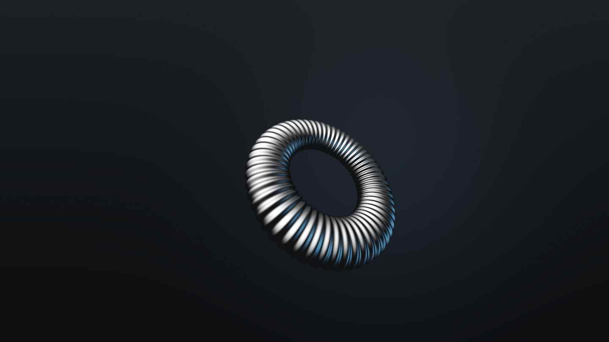

On the floor
Eleven minutes a part


Poplar, London · batch 41
One billet of 6061-T6, four parts at a time, eleven minutes each on the lathe.

Detent 01 / 24
One revolution
Each stop is a ball bearing dropping into a milled pocket. You feel them through the fingertips before you hear them.
Specification
Nothing on this part is decorative. The knurl exists because fingers slip on anodised aluminium, and the flat on the bore exists because a grub screw on a round shaft works loose by the fourth month.
On the floor